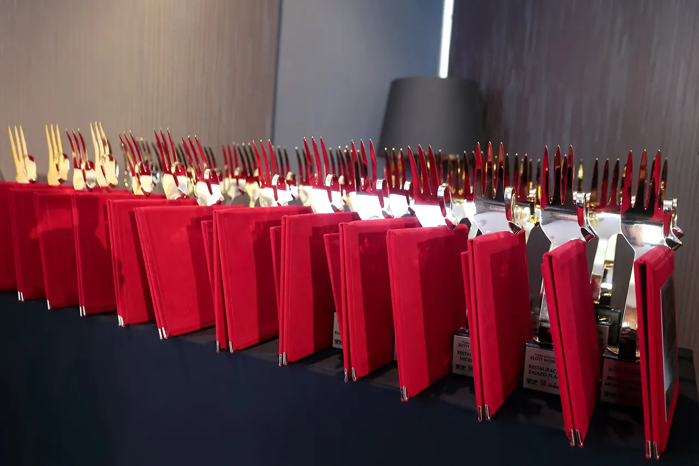

Strona główna/Laureaci
Laureaci konkursu Polska od Kuchni
Restauracje nagrodzone Złotym Widelcem, Arcymistrzowie Sztuki Kulinarnej i laureaci Chef's Choice. Archiwum edycji od I do XV.
Edycje
- XV2026 · 72 pozycji
- XIV2025 · 67 pozycji
- XIII2024 · 60 pozycji
- XII2023 · 52 pozycji
- XI2022 · 46 pozycji
- X2021 · 59 pozycji
- IX2020 · 42 pozycji
- VIII2019 · 58 pozycji
- VII2018 · 38 pozycji
- VI2017 · 40 pozycji
- V2016 · 36 pozycji
- IVedycja Warszawa od Kuchni · 30 pozycji
- IIIedycja Warszawa od Kuchni · 28 pozycji
- IIedycja Warszawa od Kuchni · 22 pozycji
- I2008 · 30 pozycji
Laureaci według miast
Szukasz nagrodzonej restauracji w swojej okolicy? Rozwiń miasto, aby zobaczyć lokale i edycje, w których otrzymały wyróżnienie.
Warszawa 353
- XV Restauracja Bocado Food & Coctails Warszawa
- XV Restauracja u Kucharzy w Arsenale Warszawa
- XV Ale Sztuka Warszawa
- XV Restauracja Krasnodwór Warszawa
- XV Restauracja Polska Airport Hotel Okęcie Warszawa
- XV Restauracja Flor No2 Warszawa
- XV Ristorante Bottega del Gusto Warszawa
- XV Ristorante Da Luciano Warszawa
- XV Restauracja Sushi Popularna Warszawa
- XV Restauracja Mezze humus & falafel Warszawa
- XV Restauracja Shuk mezze & bar Warszawa
- XV Restauracja Bocado Food & Coctails Warszawa
- XV Restauracja Gruby Josek Warszawa
- XV Restauracja Pół Żartem Pół Serio Warszawa
- XV Restauracja Viet Rice Essence Warszawa
- XIV Restauracja Brindisi Warszawa
- XIV Restauracja Polska Airport Hotel Okęcie Warszawa
- XIV Restauracja Thai Thai Warszawa
- XIV Restauracja Krasnodwór Warszawa
- XIV Restauracja Azjata Warszawa
- XIV Restauracja Świętoszek Tartuffe Warszawa
- XIV Restauracja Eatery Trad Warszawa
- XIV Trattoria Per Tutti Warszawa
- XIV Restauracja Inspector Lounge Warszawa
- XIV Restauracja Canoe Show and Lounge Warszawa
- XIV Anatolii Rainin
- XIV Strefa Rybna
- XIII Restauracja Primitivo Kuchnia i Wino Warszawa
- XIII Strefa Rybna Warszawa
- XIII Restauracja Moonsfera Warszawa
- XIII Restauracja Świętoszek Tartuffe Warszawa
- XIII Willa Biała Warszawa
- XIII Inspector Lounge Warszawa
- XIII Restauracja Giovani Rubino Warszawa
- XIII Restauracja Milanovo Warszawa
- XIII Restauracja Brindisi Warszawa
- XIII Restauracja Verde Oliva Warszawa
- XIII Restauracja Oh Wine Warszawa
- XIII Restauracja Polska Airport Hotel Okęcie Warszawa
- XIII Restauracja Flor No 2 Hotel Marriott Warszawa
- i 313 kolejnych pozycji w listach edycji
Bydgoszcz 11
- XV Trattoria Dolce Vita Bydgoszcz
- XV Restauracja King Fu Fusion Bydgoszcz
- XIV Restauracja Scoria Bydgoszcz
- XIV Trattoria Dolce Vita Bydgoszcz
- XIII Restauracja Scoria Bydgoszcz
- XII Restauracja Scoria Bydgoszcz
- XII Trattoria Dolce Vita Bydgoszcz
- X Marcin Szukaj Szef Kuchni Restauracji Kuchnia by Marcin Szukaj w Bydgoszczy
- X Restauracja Kuchnia by Marcin Szukaj z Bydgoszczy
- X Restauracja Sowa Bydgoszcz
- IX Restauracja „Kuchnia by Marcin Szukaj” z Bydgoszczy
Kielce 9
- XV The Best of the Best
- XV Restauracja Monte-Carlo Kielce
- XIV Restauracja Monte-Carlo Kielce
- XIII Restauracja Monte Carlo Kielce
- XII Restauracja Monte Carlo Kielce
- XI Restauracja Monte Carlo Kielce
- X Restauracja Monte Carlo Kielce
- IX Restauracja & Catering Monte Carlo z Kielc
- VIII Restauracja & Catering Monte Carlo z Kielc
Gdańsk 8
- XIII Restauracja Fenomen
- XIII Restauracja Kucharia 2 Gdańsk
- XIII Restauracja Solmarina Grano Hotel Gdańsk
- XIII Restauracja Brovarnia Hotel Gdańsk
- XIII Restauracja Hotelu Bartan Gdańsk
- XII Piotr Domański
- XI Restauracja Hotelu Holiday Inn Gdańsk- City Centre Gdańsk
- VIII Restauracja Magiel mieszcząca się w Hotelu Almond w Gdańsku
Istebna 8
- XIV Restauracja Bukova Istebna
- XIV Restauracja Złoty Groń i Istebna
- XII Restauracja Złoty Groń Istebna
- XII Restauracja Bukova Istebna
- XI Restauracja Hotelu Złoty Groń Resort & SPA Istebna
- XI Bukova Restauracja z Klimatem w Istebnej Istebna
- X Restauracja Hotel Złoty Groń Istebna
- IX Restauracja w Hotelu Złoty Groń Resort i SPA w Istebnej
Pabianice 7
- XIV Restauracja Zielona Górka Pabianice
- XIII Restauracja Przędzalnia „Hotel Fabryka Wełny” Pabianice
- XIII Restauracja Zielona Górka Pabianice
- XII Restauracja Zielona Górka Pabianice
- X Restauracja Wzorcownia by Wiesław Bober Pabianice
- VIII Wiesław Bober
- VI Wzorcownia, Hotel Fabryka Wełny, szef kuchni Wiesław Bober
Augustów 1
- VIII Tawerna & Bar Fisza Koncept by Marcin Budynek z Augustowa
Białowieża 1
- XII Mariusz Dąbała
Brzeszcze 1
- XII Restauracja Placek i Skórka Brzeszcze
Busko-Zdrój 1
- XI Restauracja po Nidzie Busko-Zdrój
Bydlino 1
- X Gościniec Słupski Restaurant & Rooms Bydlino
Cedzyna 1
- XV Restauracja Hubertus Hotel Echo Cedzyna
Częstochowa 1
- XV Restauracja Topolino Częstochowa
Dzierżoniów 1
- XII Restauracja Miodowa Dzierżoniów
Długopole-Zdrój 1
- XII Restauracja Hotel Dwór Elizy Długopole Zdrój
Ełk 1
- XIV Oregano Bistro Pizza Ełk
Giżycko 1
- IX Restauracja la Bibliotheque mieszcząca się w hotelu St. Bruno w Giżycku
Gostyń 1
- XII Restauracja Loft Gostyń
Gołdap 1
- VII Zajazd „Piękna Góra” Rudziewicz Gołdap
Grabowce Dolne 1
- X Restauracja Hotel Gościniec pod Lasem Grabowce Dolne Nowodwór
Iwiczna 1
- XI Czekoladki Bą Producent Krzywa czekolada Krzysztof Polak Iwiczna
Jeleśnia 1
- XIII Restauracja Country Club Żywiec Jeleśnia
Józefów 1
- XII Restauracja Luna Sol Józefów
Kaliszki 1
- XI Restauracja Dwór Kaliszki Kaliszki
Kamionek 1
- XI Restauracja Stary Kamionek Kamionek
Karpacz 1
- XI Restauracja Albero Karpacz
Kazimierz Dolny 1
- X Restauracja Willa Filiks Kazimierz Dolny
Klucze 1
- XV Bistro u Mocnych Klucze
Konstancin-Jeziorna 1
- XV Restauracja Trufla Konstancin-Jeziorna
Kołobrzeg 1
- XV Restauracja Fratelli Sapori Kołobrzeg
Kościelisko 1
- VIII Restauracja Kiyrinicka by Saguła mieszcząca się w hotelu Apartamenty Gubałówka w Kościelisku
Kroczyce 1
- VIII Restauracja w Zajeździe Hetman w Kroczycach koło Katowic
Krotoszyn 1
- XI Polska Restauracja Impresja Krotoszyn
Krynica-Zdrój 1
- XV Karczma u Walusia Krynica Zdrój
Kędzierzyn-Koźle 1
- XIII Restauracja Hotelu Hugo Kędzierzyn Kożle
Lubawa 1
- XV Restauracja Szlachecka Pałac Mortęgi Lubawa
Lubin 1
- XIV Restauracja Piekielna Kura Lubin
Lubraniec 1
- XI Restauracja Gala Lubraniec
Lwówek Śląski 1
- XIII Restauracja Lala Pałac Brunów Lwówek Śląski
Malbork 1
- XV Restauracja Malboria Hotel Malbork Malbork
Michałkowa 1
- X Restauracja Boreczna Michałkowa
Modlin 1
- X Restauracja Borodino Modlin
Nałęczów 1
- IX Willa Filiks Restauracja & Pokoje mieszcząca się w Nałęczowie
Nielęgowo 1
- XV Restauracja Willa Berlińska Nielęgowo
Nowy Targ 1
- XI Restauracja Villa Toscana Nowy Targ
Oleśnica 1
- XV Restauracja Amber w The Amber Hotel Oleśnica
Olszewo-Borki 1
- XI Restauracja Miodowa Korona Hotel Olszewo-Borki
Olsztyn 1
- X Restauracja Omega Hotel Olsztyn
Olsztynek 1
- XII Restauracja Pałac Warlity Olsztynek
Opole 1
- XIII Restauracja Hotelu Piast Opole
Ostrowo 1
- XIV Restauracja M 2 Ostrowo
Ożarów Mazowiecki 1
- VIII Restauracja George Sand mieszcząca się w Hotelu Mazurkas w Ożarowie Mazowieckim
Pasłęk 1
- X Restauracja Nova Nowa Wieś Pasłęk
Piotrków Trybunalski 1
- X Wolski Catering by Soul Food Bistro Piotrków Trybunalski
Piwniczna 1
- XI Restauracja „Willa pod Kasztanami” Piwniczna
Podkowa Leśna 1
- III Weranda Cafe Podkowa Leśna ul. Jana Pawła II 3
Podzamcze 1
- XIII Restauracja Hotelu da Vinci Podzamcze
Radawa 1
- XI Restauracja Ferula w Hotelu Bacówka Radawa & SPA . Radawa
Radom 1
- VIII Pracownia Cukiernicza „Ewa” Jankowscy z Radomia
Ropczyce 1
- XI Restro & Winebar Omatsu by Tomasz Smoczyk Ropczyce
Sopot 1
- VIII Bagażownia Restauracja Zynera z Sopotu
Sosnówka 1
- XIV Hotel Lake Hill Karkonosze Resort & SPA Sosnówka
Starachowice 1
- XII Restauracja Atrium Starachowice
Stare Babice 1
- XI Moonlight Cocktail Bar Stare Babice
Sucha Beskidzka 1
- XIII Rezo Restro & Bar Sucha Beskidzka
Wejherowo 1
- X Restauracja Piąte Piętro Wejherowo
Wilkasy 1
- IX Restauracja w Hotelu Tajty mieszcząca się w Wilkasach koło Giżycka
Władysławowo 1
- X Restauracja Małe Morze Władysławowo
Zielona Góra 1
- X Restauracja „Wino i Grono” Zielona Góra
Ząbki 1
- XI Restauracja Pecorino Italian Food & Wine Ząbki
Łomianki 1
- III Jacks Bar & Restaurant Łomianki ul. Warszawska 71B